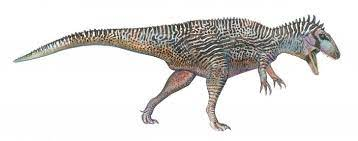

Carcharodontosaurus (lat. «lagarto con dientes de tiburón») es un género de dinosaurios terópodos carcarodontosáuridos, que vivieron a mediados del período Cretácico, hace aproximadamente entre 112 y 93,5 millones de años, entre el Albianense y Cenomaniense llegando unos pocos miles de años hasta inicios del Turoniense, en lo que hoy es África. Es uno de los mayores dinosaurios predadores que se conocen, y compartió el mismo territorio y la misma época con Spinosaurus, otro dinosaurio carnívoro de gran tamaño.12 En la actualidad se estima que los especímenes descubiertos hasta la fecha pertecenen a dos especies distintas: C. saharicus y C. iguidensis.
DESCRIPCIÓN
Carcharodontosaurus fue un gran terópodo carnívoro cuyo tamaño rivaliza con otros terópodos de grandes dimensiones como por ejemplo Tyrannosaurus, Giganotosaurus o Spinosaurus. Las diferentes estimaciones de longitud y peso de la especie C. saharicus oscilan entre 12 y 13,3 metros de longitud y entre las 4,5 y las 8 toneladas de peso.13245 Tenía uno de los mayores cráneos de los observados hasta ahora en animales terrestres, de aproximadamente 1,6 metros de largo, y se piensa que el cráneo de C. iguidensis sería aproximadamente del mismo tamaño,6 empatando con su pariente suramericano Giganotosaurus, de cuyo holotipo (número de inventario: MUCPv-Ch-1l) se llegó a estimar en un principio una longitud de cráneo de hasta 1,80 metros de largo,7 pero actualmente esta longitud ha sido revisada y se piensa que el cráneo del holotipo de Giganotosaurus probablemente midiera entre 1,56 y 1,6 metros.38 Gregory S. Paul estima que C. iguidensis medía 10 metros de largo y pesaba 4 toneladas.9
Carcharodontosaurus tenía mandíbulas llenas de aserrados dientes parecidos a los de los tiburones (de ahí su nombre «lagarto con dientes de tiburón»), que tenían la función de desgarrar carne, por lo que sus presas morían desangradas, además sus patas delanteras tenían garras afiladas como garfios de carnicero para sostener a sus víctimas mientras las destrozaba con sus mandíbulas.
| |
|
|
| |
|
|